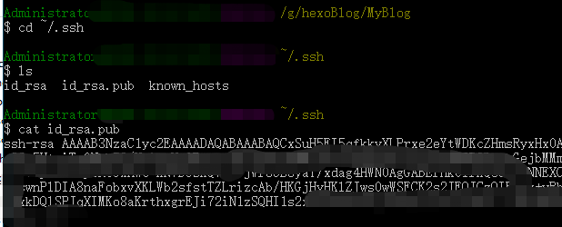
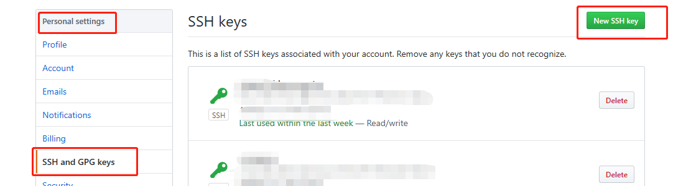
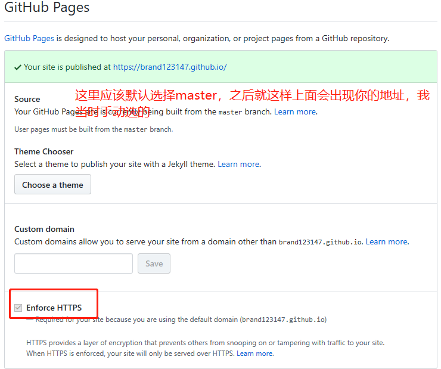
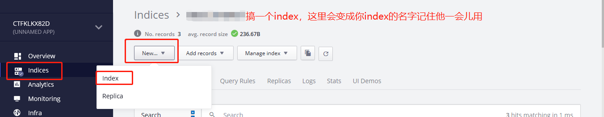
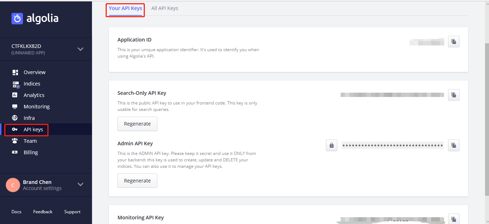
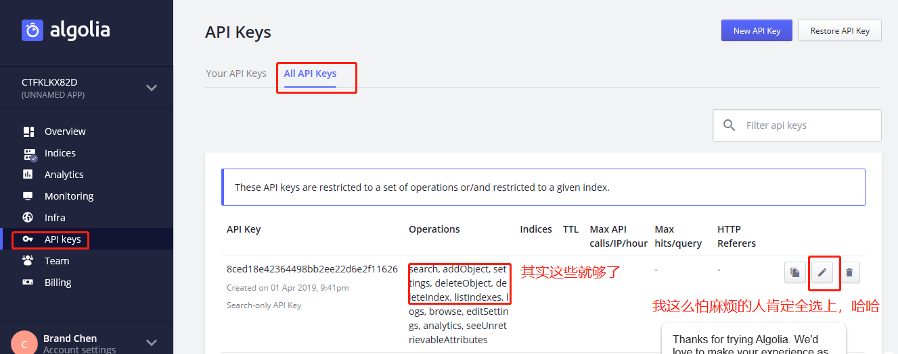

用工作空余时间终于搞出了基本功能，在这激动人心的时刻记录下过程，为第一篇博文
1
2
在本地电脑新建一个文件夹MyBlog作为博客后台（随便DEF盘），右键GitBashHere，第一次弄当然是先关联自己的github啦，没有GitHub的自己去申请一个
1 | git config --global user.name"你的昵称" |
想了解更详细的git+GitHub操作和概念请戳这里英语好的戳这里
接下来添加SSH key
1 | ssh-keygen -t rsa -C "邮箱地址" |
回车三次

将那串长长的复制过来

直接输入
1 | ssh -T git@github.com |
看到Hi liuxianan! You’ve successfully authenticated, but GitHub does not provide shell access.说明配置成功啦
3
创建仓库， 仓库名为：Github昵称.github.io一定要是GitHub的昵称 一定要是GitHub的昵称 一定要是GitHub的昵称重要的事情说三遍，勾选public，添加readme。创建出来之后，进入设置

4
接下来在本机当中 作为博客后台的那个文件夹 中右键Git Bash Here
1 | npm install -g hexo //安装hexo |
在文件夹中修改_config.yml文件中的最后一项1
2
3
4
5
6# Deployment
## Docs: https://hexo.io/docs/deployment.html
deploy:
repository: 复制GitHub中clone or download的那个--->（git@github.com:<Github账号名称>/<Github账号名称>.github.io.git）
type: git
branch: master
回到GitBashHere
1 | npm install hexo-deployer-git --save //用以上传到GitHub |
改域名这种事要先自己去买个域名，解析这里不多做介绍自行百度，听说用coding比较快，不过我网速好，任性，哈哈哈就不折腾了
5
博客差不多好了当然是写博客啦,对了，细心的孩纸在修改_config.yml的时候应该看到了开头有改名字，描述等等一些配置，自己配咯1
2
3
4
5
6
7
8
9hexo new "postName" #新建文章
hexo new page "pageName" #新建页面
hexo generate #生成静态页面至public目录
hexo server #开启预览访问端口（默认端口4000，'ctrl + c'关闭server）
hexo deploy #部署到GitHub
hexo help # 查看帮助
hexo version #查看Hexo的版本
hexo clean # 清除缓存
hexo g -d # hexo generate和hexo deploy的组合生成和发布
6
接下来当然是换一个自己看的顺眼的主题啦，各种hexo主题戳这里
这个是我使用的主题，喝水不忘挖井人，感谢题主提供这么精美的主题
在readme中都有提供preview和安装教程，这里我再介绍一下我都部署
还是在老地方gitbashhere1
2
3git clone https://github.com/fan-lv/Fan.git themes/Fan
npm install hexo-renderer-jade --save //安装依赖啊
npm install hexo-renderer-stylus --save //安装依赖啊
在博客根目录_config.yml中修改：
algolia_search:enable 改成 false
theme: Fan1
2hexo clean
hexo g -d
过一会儿看看是不是变了
在themes\Fan目录下_config.yml修改自己的名字，等等
头像是放在\themes\Fan\source你懂的
7
我觉得标签什么的不是那么重要，搜索比较重要所以先来搞搞搜索
Algolia 登陆页面可以通过GitHub登录或者你随意
在themes\Fan下的_config.yml中配置：
1 | # algolia 搜索 |
在博客根目录下的_config.yml中配置：
对了这个.yml冒号之后要空格一下之前不知道坑死我了


1
2
3
4
5
6algolia:
applicationID: 'Application ID'
apiKey: '复制上图中的Search-Only API Key'
adminApiKey: '复制上图中的Admin API Key'
indexName: '上图配的'
chunkSize: 5000
再次回到老地方gitbashhere：
1 | export HEXO_ALGOLIA_INDEXING_KEY=你的API Key // 这里一个坑 |
再更新一下hexo g -d就ok了
顺带说一下我是在线编辑的感觉还可以，写好了扔\source\_posts里面发布，不想折腾